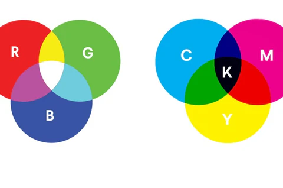

Je computerscherm bestaat uit allemaal pixels. Achter een zo'n pixel zitten drie lampjes: een rode, een groene en een blauwe, vandaar de naam rgb. Die drie lampjes kunnen allemaal een verschillende sterkte hebben. Je kan alle 256 waardes kiezen tussen de 0 en 255.
